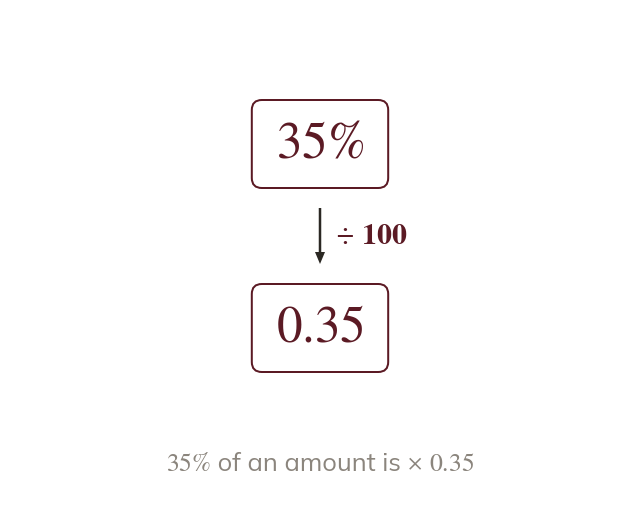

The multiplier
A percentage multiplier makes a percentage one multiplication. For of an amount, multiply by
A percentage multiplier turns a percentage change into a single multiplication. To find of an amount, multiply by - so of an amount is the same as multiplying by